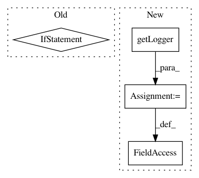

086465c96176a82b2dd3f3d378c8de8af8811905,solutions/set_expansion/expand_server.py,,,#,56
Before Change
print("done")
if __name__ == "__main__":
parser = argparse.ArgumentParser(prog="expand_server.py")
parser.add_argument("model_path", metavar="model_path", type=validate_existing_filepath,
help="a path to the w2v model file")
parser.add_argument("--host", type=str, default="localhost",
help="set port for the server", action=check_size(1, 20))
parser.add_argument("--port", type=int, default=1234,
help="set port for the server", action=check_size(0, 65535))
args = parser.parse_args()
port = args.port
model_path = args.model_path
print("loading model")
se = set_expand.SetExpand(model_path)
print("loading server")
HOST, PORT = args.host, port
server = socketserver.TCPServer((HOST, PORT), MyTCPHandler)
print("server loaded")
server.serve_forever()
After Change
from nlp_architect.utils.io import validate_existing_filepath, check_size
logging.basicConfig(stream=sys.stdout, level=logging.INFO)
logger = logging.getLogger(__name__)
class MyTCPHandler(socketserver.BaseRequestHandler):
In pattern: SUPERPATTERN
Frequency: 3
Non-data size: 4
Instances
Project Name: NervanaSystems/nlp-architect
Commit Name: 086465c96176a82b2dd3f3d378c8de8af8811905
Time: 2018-07-18
Author: shira.guskin@intel.com
File Name: solutions/set_expansion/expand_server.py
Class Name:
Method Name:
Project Name: NervanaSystems/nlp-architect
Commit Name: cac1a6393166806e3bf7dd1ca85986a2b45ba576
Time: 2018-07-03
Author: jonathan.mamou@intel.com
File Name: solutions/set_expansion/set_expand.py
Class Name:
Method Name:
Project Name: dmlc/gluon-cv
Commit Name: b7988369f77e12525604e2613b279c13f041f484
Time: 2019-12-04
Author: wuxun.zhang@intel.com
File Name: scripts/pose/simple_pose/validate.py
Class Name:
Method Name: